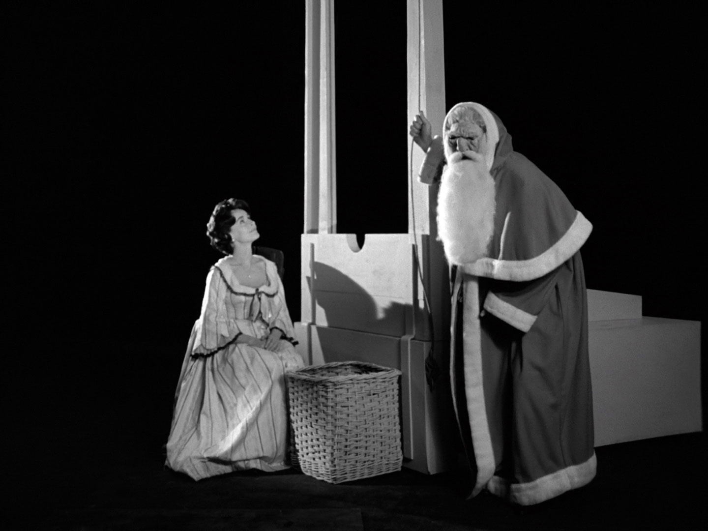
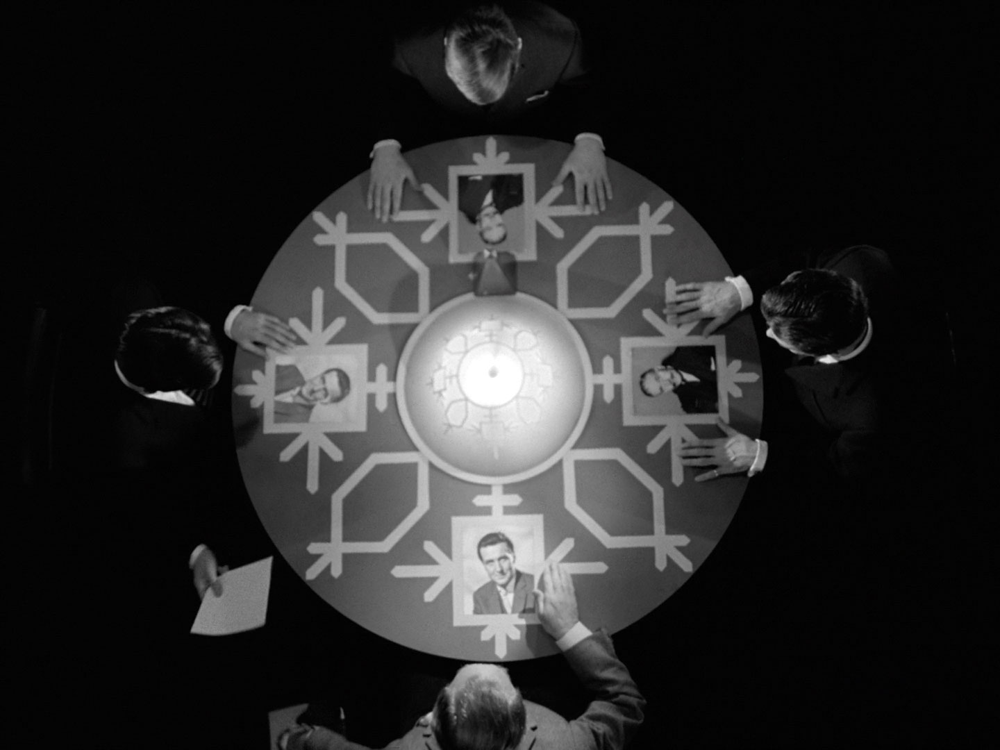
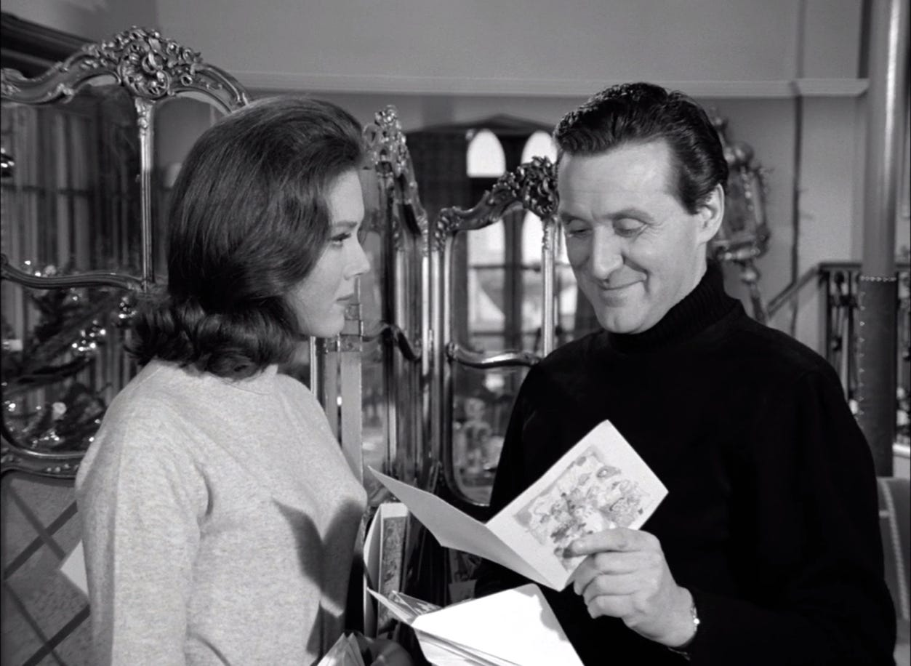

Father Christmas turns nightmare killer in this special holiday episode of The Avengers. Steed is haunted by Yuletide themed dreams predicting deaths at the hands of the jolly old elf. The dreams themselves are visually stunning, fully taking adavantage of the surreal dreamscape. The flat white trees standing out against the deep black backgrounds, silver shining ornaments tinkling away with an invisible breeze. Deeply unnerving, the unrealness of the dreamscape extends to Santa Clause as well. With a mask that looks more melted than flattering, his laughter and pointing at all the various deaths he causes are nothing less than disturbing. What diabolical mastermind is hiding behind that mask we wonder? Oh well! It's off to the country estate of a famous publisher for the seasons festivities! Charles Dickens themed parties, hypnotism, and, of course, Murder plague the duo. Will Steed and Peel solve this christmas caper before it's too late? Or will they too become more victims on the naughty list?
Title: Too Many Christmas Trees
Season: 4
Episode: 13
Rating: 5-5 Stars
Roy Ward Baker also directed the episodes "The Town of No Return," "Two's a Crowd," "Silent Dust," "Room Without a View," "The Girl from Auntie," and "The Thirteenth Hole."
Tony Williamson also wrote the episodes "The Murder Market," "The Thirteenth Hole" "The Positive Negative Man," "Super Secret Cypher Snatch," "Whoever Shot Poor George Oblique Stroke XR40?," "Wish You Were Here," "Killer," and "Stay Tuned."